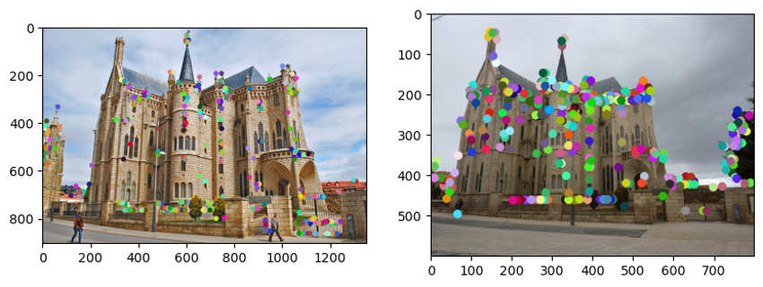
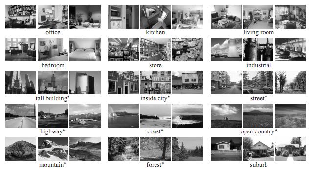
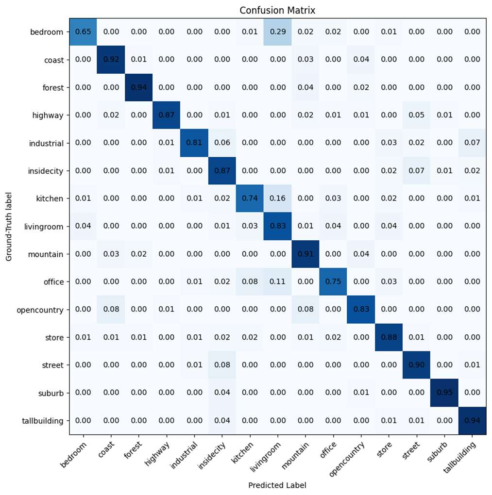
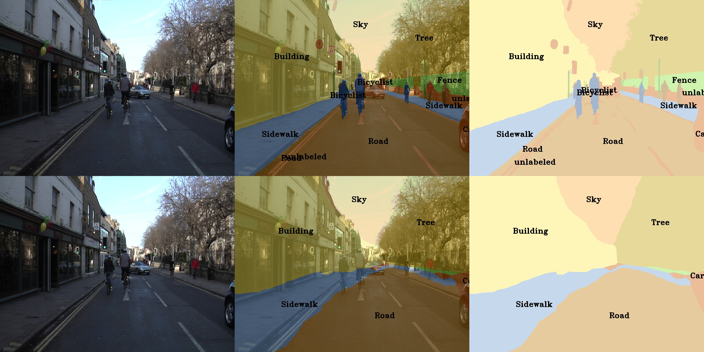
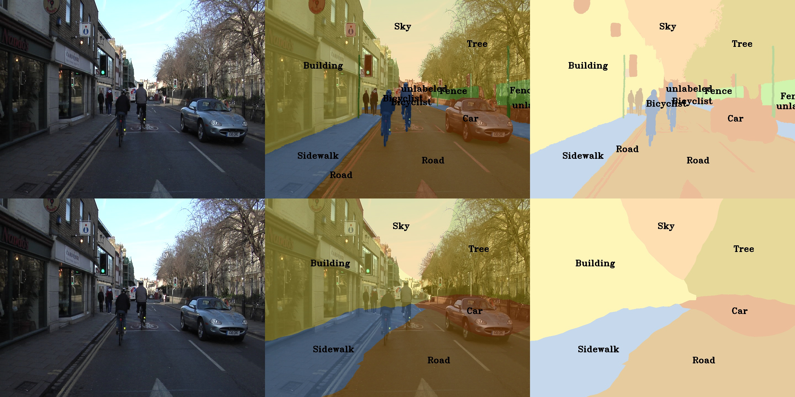
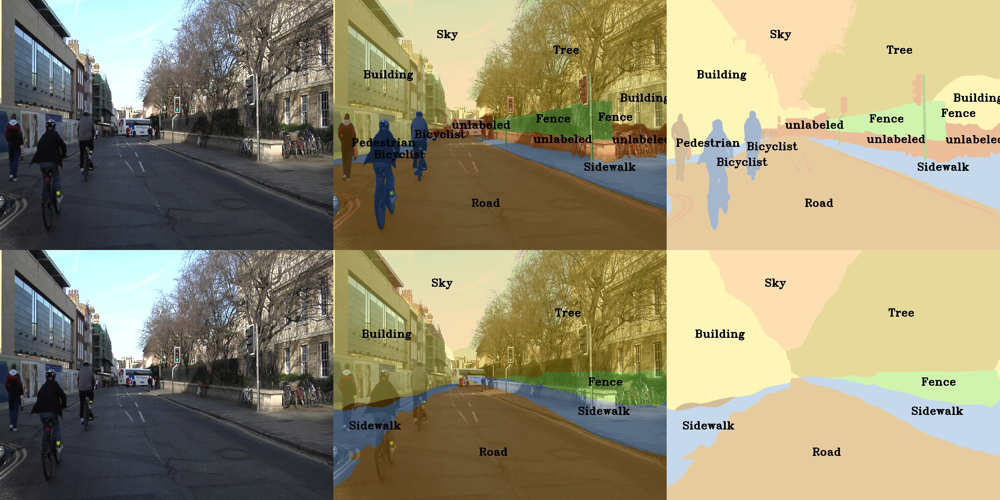
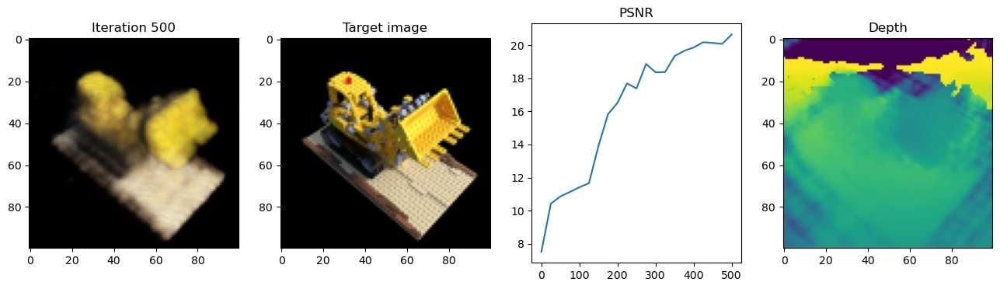

Portfolio of coursework for CS 6746 — Computer Vision at Georgia Tech (CS 6476 curriculum). The sequence moves from classical image processing and geometry through deep learning for recognition and segmentation, then to 3D perception with point clouds and neural radiance fields.
Seven projects (0–6; Project 0 is environment setup) cover convolution and hybrid images, SIFT and camera calibration, scene recognition, semantic segmentation, PointNet on LiDAR sweeps, and NeRF. Each project pairs implemented code (NumPy, PyTorch) with a written report and visual results.
| Project | Topic | Key skills |
|---|---|---|
| 1 | Convolution & hybrid images | Gaussian filters, frequency separation, PyTorch conv |
| 2 | SIFT & calibration | Harris corners, descriptors, epipolar geometry, RANSAC |
| 3 | Scene recognition | CNNs, augmentation, ResNet, multilabel classification |
| 4 | Semantic segmentation | PSPNet, CamVid, dilated convolutions, mIoU evaluation |
| 5 | Point clouds | PointNet, Argoverse sweeps, 3D classification |
| 6 | NeRF | Positional encoding, volume rendering, novel views |
Built convolution from scratch in NumPy (Gaussian kernels, Sobel/Laplacian, low/high-pass filtering), then constructed hybrid images by combining low frequencies from one photograph with high frequencies from another. Extended the pipeline with PyTorch datasets and frequency-domain convolution.
Implemented the classical feature pipeline: Harris corner detection, feature matching, SIFT descriptors, and geometric verification with homographies and epipolar constraints. Evaluated on landmark image pairs (Notre Dame, Mount Rushmore, Gaudí) and Georgia Tech campus sequences.

Trained deep networks for 15-way outdoor scene classification (MIT indoor/outdoor scene
dataset). Progression: custom SimpleNet → data augmentation and normalization → ResNet
fine-tuning → multilabel ResNet. Used confusion matrices to analyze per-class errors and class imbalance.


Report targets: ≥45% validation accuracy (SimpleNet), ≥55% (augmented SimpleNetFinal), with ResNet and multilabel extensions for higher performance. Training used PACE ICE GPUs for larger experiments.
Implemented pyramid pooling (PPM), CamVid dataloading, and a PSPNet-style segmentation head. Trained on CamVid at 240×240 resolution for 5 epochs and evaluated with mean IoU, mean accuracy, and pixel accuracy.
| Metric | Value |
|---|---|
| Mean IoU (mIoU) | 42.78% |
| Mean accuracy (mAcc) | 50.61% |
| Overall pixel accuracy | 85.44% |
Strong classes included Sky (84.3% IoU), Road (85.5%), Tree (77.9%), and Building (81.9%). Rare classes such as Bicyclist and SignSymbol were harder at this resolution and training budget.



Classified Argoverse LiDAR sweeps with a simplified PointNet: permutation-invariant MLPs over 3D points, baseline models, and optional T-Net spatial transforms (extra credit). Data spans 20 object categories (vehicles, pedestrians, signs, etc.) stored as text point clouds rather than images.
Implemented the full pipeline—dataloader, baseline classifier, PointNet architecture, and error analysis— with training on PACE. Report discusses invariance to point order and sensitivity to sampling density.
Built a neural radiance field from first principles: positional encoding of 3D coordinates, MLP density and color heads, ray sampling, and volume rendering to synthesize novel views. Started with 2D image fitting before extending to full 3D NeRF training on multi-view captures.

Across projects, the course emphasized both implementing fundamentals (convolution, SIFT, camera models) and scaling with deep learning (CNNs, segmentation, PointNet, NeRF). Classical methods remain interpretable and fast; learned models handle ambiguity in recognition and dense prediction but need data, compute, and careful evaluation metrics (accuracy, mIoU, IoU per class).